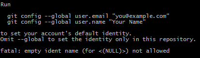
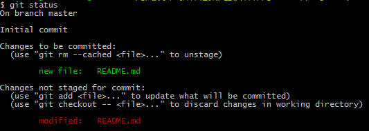
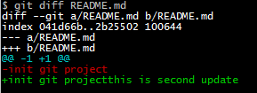
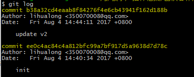
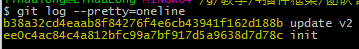

版本库
1创建版本库
命令行进入要保存版本库的目录文件夹
mkdir project
cd project
git init
在project文件夹内会创建一个.git的隐藏文件夹，是git用来跟踪管理版本库的
2 添加文件
echo 'init git project'>README.md
git add README.md
git commit -m 'init'
echo可以创建文件并写入(>)和追加(>>)内容
git add 把文件添加到仓库 git add --list可以查看所有参数
git commit 提交本次操作 -m 后面是本次提交的说明 git commit --list 查看所有参数
3 设置用户名
如果提交时出现以下提示，需要我们配置用户名

可以采用提示的配置命令，也可以进行当前仓库的用户配置
git config --local user.email ''
git config --local user.name
4 查看仓库当前状态
- git status
我们可以先修改一下README.md
echo 'this is second update'>>README.md
git status

README.md被修改过还没有提交
- git diff
我们在继续看README.md做了哪些修改
git diff README.md

我们提交修改
git add --all
git commit -m 'update -v'
5 查看版本
- git log
我们已经修改过README.md，想知道修改了几个版本？
git log

git log --pretty=online

上图显示的是版本号和说明
6 回退版本
- git reset
git 用HEAD表示当前版本，上一个版本就是HEAD^，上两个版本就是HEAD^^，上100个版本可以用HEAD~100
git reset --hard HEAD^
再使用 git log 查看版本，打开README.md看看内容
现在对刚才的回退操作后悔了，还想回到第二版
git reset --hard b38a32
--hard 后面指定版本号的前几位即可
- git reflog
如果找不到版本号了
git reflog
该命令可以记录操作的每一次命令，可以看到版本id
7 撤销操作
- git checkout
我们执行如下修改
echo '1111'>>README.md
git add --all
echo '2222'>>README.md
我们进行了2次修改，第一次修改后我们使用了git add命令，这时我们运行git log查看版本，还是之前的两个版本，因为我们没有执行git commit命令，所以不会生成版本
我们撤销刚才的修改
git checkout -- README.md
但是并没有把1111撤销，这是因为在修改1111后执行了git add命令，已经把修改放到暂存区了，没有保留在工作区
git reset HEAD README.md
git checkout -- README.md
以上命令，先把暂存区撤销，然后在撤销工作区